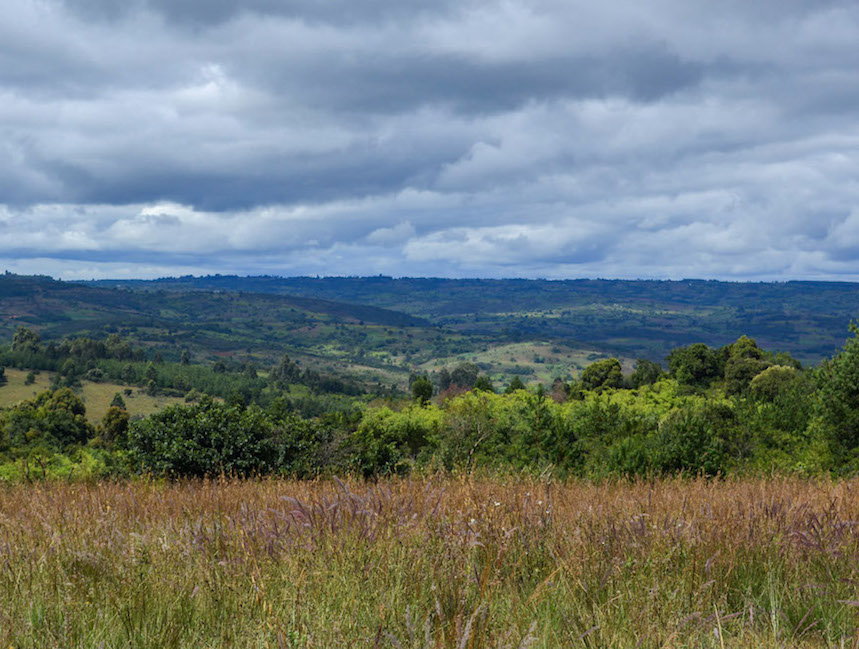
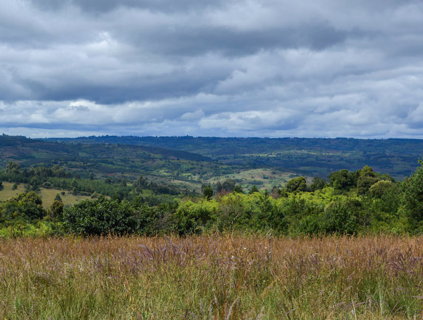

Renewable Energy
Wangama Foundation and the environmental program is currently planning to incorporate a renewable energy project to provide electricity in a remote area of the Ward. We are gathering data to identify where a suitable location is and which type of renewable energy would work best. Preliminary thoughts include piloting a wind turbine at the newly constructed Mdandu primary school or equipping the Health Center with solar panels as a supplementary power supply.
The photograph shown on this page is the first ever aerial image of the main village of Wangama! Taken at 500 meters (about 1640 feet) above ground surface. A bird's eye view photograph like this is the first step towards mapping suitable locations and identifying the layout of the land.
 
